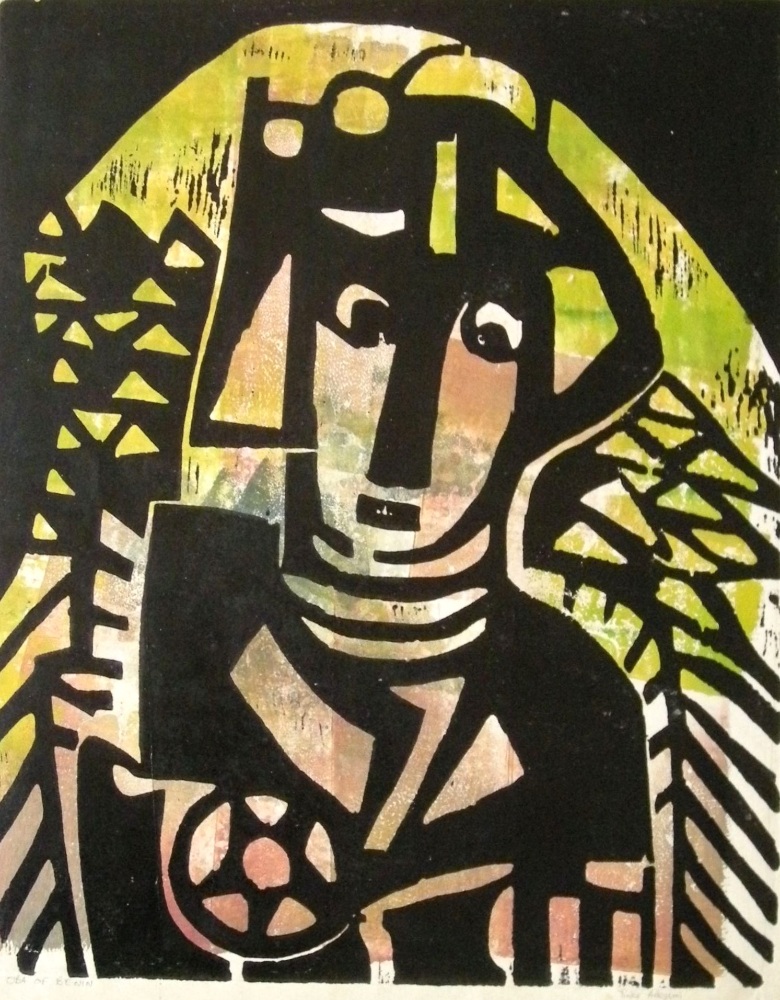

Yinka Adeyemi
b.1945
Artist Biography
Yinka Ademeymi was born in Osun State, Nigeria and participated in the Oshogbo workshops with Austrian artist Susanne Wenger in the early-mid 1960s. He joined the Duro Lapido Theatre but turned to the visual arts and became known for his batik painting, prints and bead painting. He lived in Ife-Ife for some forty years, during which time he was a cultural assistant at the University of Ife and was an artist in residence there too, before moving to Oakland, California in the United States in the early 2000s. Adeyemi’s works have been shown in solo and group exhibitions in Nigeria, elsewhere in Africa, and in Europe and the United States. Adeyemi’s prints were exhibited at the Smithsonian’s National Museum of African Art in Washington from 2024-25, in ‘Bruce Onobrakpeya: The Mask and the Cross’ when he was one of five contemporaries whose work was juxtaposed with that of Onobrakpeya.

Oba of Benin